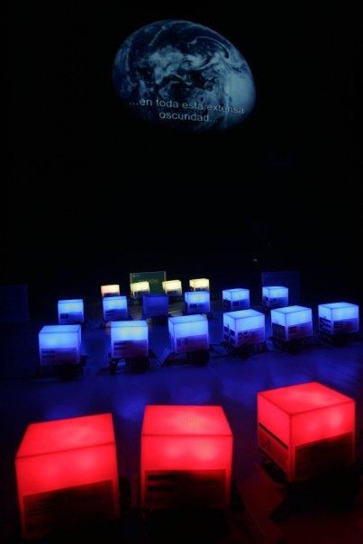

Hace dos semanas se ha realizado un taller de Robótica Básico en la Campus Party de Iberoamérica 2008.
En el taller están representados grupos de trabajo de 22 países iberoamericanos, un total de 22 robots, que tendrán que hacer una tarea colaborativa entre todos ellos.

El Skybot lo hemos adornado con una carcasa de plástico que se ilumina en diferentes colores configurables por software. Al final han hecho una coreografía representando las 22 banderas de los países participantes.
La bitácora del evento la podréis ver en:
Que orgullosa estoy de ser de El salvador,jeje:P , espero que os gustara El salvador, me entere de la campus pero como acababa de llegar de vacaciones de ahi al final me arrepenti de averlo sabido me voy mas tarde de vacaciones me cachis:P.
Y lo de los vuelos es una suerte si todo sale bien jeje, yo tube suerte
un saludo.